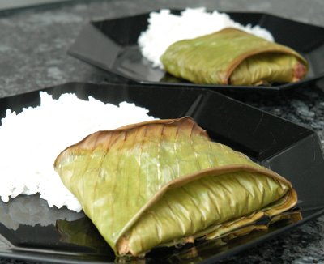

| Zutaten für 4 Personen: | |
| 200 g | Pangasiusfilets oder z.B. Seeteufel |
| 4 El | Fischsauce (Nam Pla) |
| Pfeffer aus der Mühle | |
| wenig | Salz |
| 2 | Limonenblätter |
| 200 g | gehacktes Rindfleisch |
| 1-2 El | rote Currypaste |
| 1 dl | Kokosmilch |
| 2 | Eier |
| 2 | grosse, ganze Bananenblätter |
Den Fisch in fingergrosse Streifen schneiden und mit Fischsauce und Pfeffer marinieren. ca. 10 Minuten stehen lassen.
Anschliessend salzen.
Die Limonenblätter fein schneiden und in eine Schüssel geben. Mit dem Rindfleisch, dem Fisch, der Currypaste, der Kokosmilch und den Eiern sorgfältig mischen.
Die Bananenblätter in 20 cm lange Stücke schneiden und jeweils 2 quer aufeinander legen.
Die Fisch/Fleischmasse auf die Blätter verteilen wenig Sauce zugeben und kleine Päckli machen. Mit einem Zahnstocher befestigen. Die Bananenblätter werden nicht gegessen!
Im Sommer auf dem Grill braten ansonsten im Ofen bei 200°C mit Umluft ca. 20 Minuten backen.
Patricia Krummenacher
Gelang hervorragend unter der fachkundigen Leitung vom Patricia Krummenacher im November 2004
Schmeckt auch am 18.5.2010 toll. RE
@LINKBACK_TAG@ @WAKELOCK@